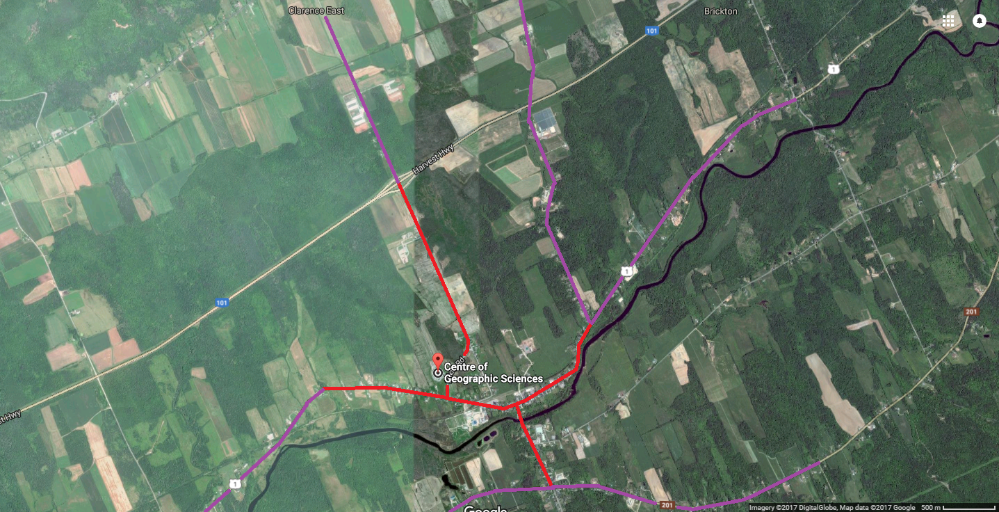

Walking & Biking to COGS:
Spring, Summer & Fall Travel:
Walking is an important part of student life, and can be a great source of daily exercise if you happen to live far enough away, yet still a managable distance! Travelling can change depending on weather as well; we've outlined the spring, summer and fall advice below, Winter Travel is further down! We've outlined some basic tips and tricks below; as well as a basic walking map for the COGS campus specifically!

Red is Walking; Purple is Biking!
You can see our map for recommended travel distances colour-coded on the map below! If you're within the red, we recommend you walk (Less than 1.5KM), while if you're in the purple we recommend you bike (1.5-3KM)! If you're not on the map, we recommend you Travel By Bus , or Carpool !
Winter Travel:
As for walking and biking in winter, we recommend doing regular research on the upcoming weather (check out below for the current weather, and our Weather Page for a full weekly weather update!, and limit yourself to half the recommend distance as you would in summer, 750m for walking, and 1.5km for biking. We highly recommend you Travel By Bus , or Carpool instead, however.
Shortcuts and Tips:
For walking around the NSCC COGS area, we highly recommend you check out the Snowmobiling/Walking trail near the Lawrencetown Firestation! It travels from Middleton all the way into Lawrencetown in the Spring, Summer, and Fall; however don't use it during the winter, as Snowmobiles call it home!
Team Slumber Party ★ IT Programming ★ NSCC Campus of Geographic Sciences